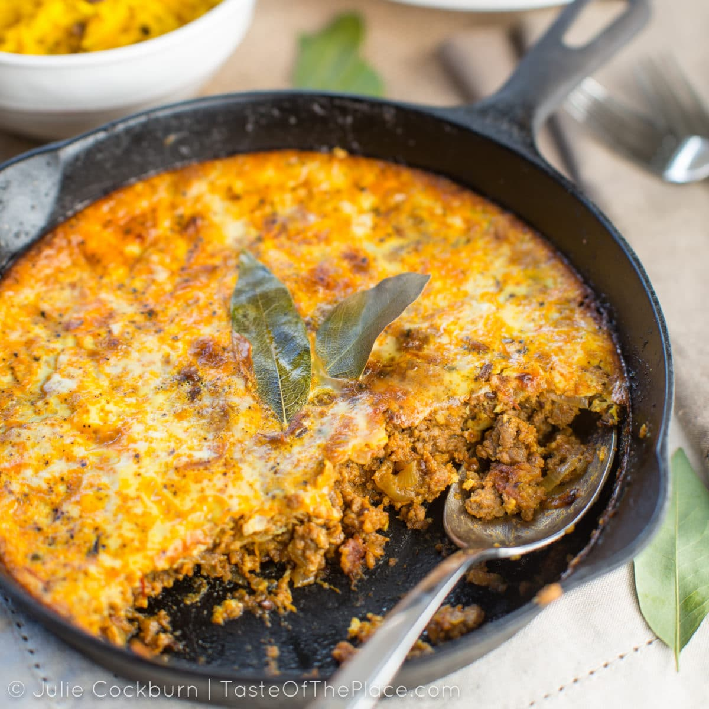

<!DOCTYPE html>
<html lang="en">
<head>
    <meta charset="UTF-8">
    <meta name="viewport" content="width=device-width, initial-scale=1.0">
    <title>Southern Africa - Taste of Africa</title>
    <link rel="stylesheet" href="../styles.css">
</head>
</html>
<body>
    <header>
        <a href="#" class="logo">TASTE OF AFRICA</a>

        <nav class="navbar">
          <a href="../index.html">Home</a>
          <a href="West-africa.html">West Africa</a>
          <a href="East-africa.html">East Africa</a>
          <a href="North-africa.html">North Africa</a>
          <a href="Southern-africa.html" class="active">Southern Africa</a>
  </nav>
    </header>
    <h1 class="region-culture">Southern African Cuisine</h1>

  <!-- Region Description -->
  
  <section class="Food-culture">
    <h2>Southern African Food Culture</h2>
    <p>
    Southern African cuisine reflects the diverse cultures and natural resources of the region, combining indigenous traditions with influences from European settlers and neighboring regions. Meals are often hearty, focusing on grilled meats, maize-based dishes, and seasonal vegetables, and are central to family and community gatherings. Social events frequently feature outdoor cooking, particularly braais (barbecues), where meat is seasoned, grilled, and shared communally. The cuisine emphasizes simplicity, robust flavors, and locally available ingredients, with a balance of starches, proteins, and greens. Staples like maize meal, sorghum, and millet form the backbone of everyday meals, often accompanied by stews, pickled vegetables, or sauces flavored with aromatic herbs and spices.
    </p>
  </section>
  
  <section class="staples">
    <h2>Staples of Southern African Cuisine</h2>
    <p>
        Southern African meals are built around hearty, locally sourced staples. The most common include maize meal (used for dishes like pap), sorghum, and millet, which serve as the base for many meals. These are often paired with grilled or stewed meats such as beef, chicken, or game, and accompanied by leafy greens, beans, and root vegetables. Other staples include pumpkin, sweet potatoes, and cassava, which provide essential nutrition and variety.
    </p>
  </section>
  
  <section class="techniques">
    <h2>Cooking Techniques</h2>
    <p>
        Southern African cooking emphasizes methods that enhance natural flavors and create hearty, satisfying meals. One of the most iconic techniques is <mark>grilling over open flames (braai)</mark>, which imparts a smoky flavor to meats like beef, chicken, and game. <mark>Slow-cooking stews</mark> is another common method, allowing tough cuts of meat to become tender while blending with vegetables and spices.
        Other techniques include <mark>boiling</mark> or steaming maize meal and grains to create staple porridges like pap, as well as <mark>fermenting grains</mark> to develop unique flavors and improve digestibility. Aromatic seasonings such as <mark>chili peppers</mark>, <mark>ginger</mark>, <mark>coriander</mark>, and <mark>thyme</mark> are frequently added during cooking to enrich the flavor of stews, sauces, and grilled dishes. These methods reflect the region’s emphasis on simplicity, robust flavors, and communal dining traditions.
    </p>
  </section>
  

  <!-- Example Dishes -->
  <section class="example-dishes">
    <h2>Example Dishes</h2>
    <div class="dishes-list">
     <br>
     <a href="../Recipes/bobotie.html">Bobotie recipe</a>
     <p>A traditional South African baked dish made with spiced minced meat and a savory-sweet custard topping, often served with yellow rice and chutney.</p>
    </div>
  </section>

  <!-- Embedded Video -->
  <section class="embedded-video">
    <h2>Southern African dishes</h2>
    <iframe width="560" height="315" src="https://www.youtube.com/embed/DW8SohCbYj4?si=B6_clDYAOAoOxISW" title="YouTube video player" frameborder="0" allow="accelerometer; autoplay; clipboard-write; encrypted-media; gyroscope; picture-in-picture; web-share" referrerpolicy="strict-origin-when-cross-origin" allowfullscreen></iframe>
  </section>
  </div>
  <!-- Go Back -->
  <div class="go-back">
    <p><a href="regions.html">&larr; Go Back to All Regions</a></p>
  </div>

</body>
<footer class="footer">
  <div class="footer-content">
    <p>&copy; 2025 Kolade Adepoju. All rights reserved.</p>
  </div>
</footer>
</html>